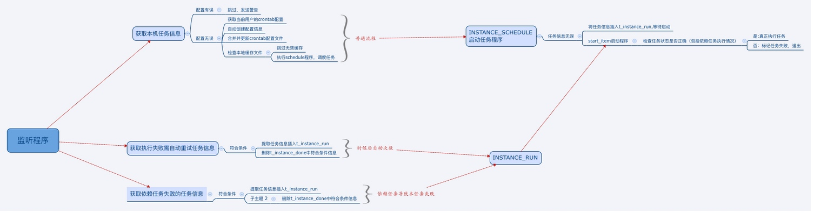

依赖调度的意义
依赖调度 故名思议实现了任务间的依赖并且能自动调度。相信大家对服务器的crontab很熟悉，简单的配置就能实现任务的自动启动，给程序员节省了大量的时间。java世界也出现了各种各样的开源任务调度，使用十分方便。
crontab 的缺点 crontab 仅仅实现了任务的自动调动，对于任务间的依赖，比如A任务将要在B任务执行完成并且成功之后才启动执行，contab就显得实力不够了。
依赖的好处：
1.可以从上二下排查任务执行情况
2.把公司繁重的任务统一集中管理
3.利于不同团队开发人员间的合作
crontab 的改进 我们可以基于在crontab实现可依赖任务的job调度器.
依赖调度设计
首先看如下流程图，了解大体设计思路：

1.监听程序可理解为一直在运行进行监听任务
2.监听程序将获取属于本机的任务信息（不是本机的不用关心），检查任务信息是否有误，是否发送警报（email，短信）当数据库访问失败之后将会把信息写入本地缓存，当监听任务下次启动是重新调度。将执行用户的crontab配置 和自动生成的crontab配置文件合并 并写入此用户的 crontab
3.用户crontab 到指定时间开始执行 schedule程序。schedule程序中将会处理任务的依赖，是否有回调钩子等信息。
4.真正执行命令。可以到此用户的home目录执行命令。如命令执行成功，标记任务成功，如任务失败，检查此任务是否需要自动次数，需要则重复执行此命令，知道最大重试最大次数或者该任务执行成功，最后标记任务
5.任务执行过程中非常可能存在依赖任务未执行成功的情况,此种情况可把此任务信息保存下来，标记是任务失败是因为依赖任务未就绪。在监听任务中将因依赖任务未就绪执行失败的任务重新调度起来。以此实现自动唤醒用户任务的目标
总结
1.以上设计了一个简单的依赖调度系统，并未设计具体实现细节，旨在提供一种任务依赖的思路。在具体实现中，功能非常之多，比如自动重试，立即执行，调度顺序，最大并发数，按天依赖，还是按小时依赖，依赖的具体值（如：0 days ago ,1 days ago ,1hours ao）
2.调度的功能靠服务器crontab来实现
3.对于链式调度目前的方法是一直遍历。【起初未考虑到链式调度，所以此功能实现较猥琐】链式调度：即主动唤醒，依赖自己的所有任务，而不需要等到子任务特定的时间执行。欢迎大家又更好的设计方案一起讨论